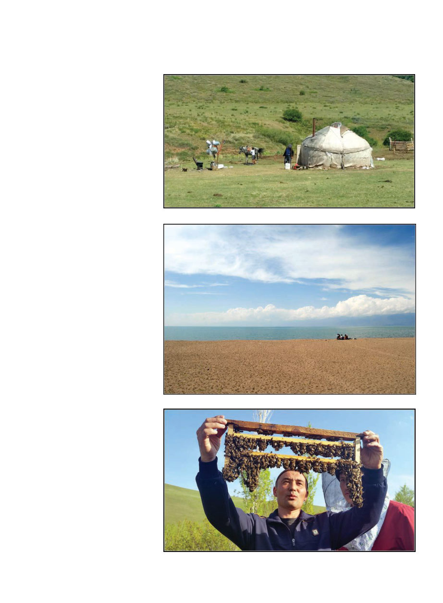

June 2019
705
mountain lake of Issyk-Kul, a lake so
big you can barely see the mountains
on the far side (and a comfortable
temperature for swimming in. Bob-
bing out there in the refreshing water,
you can look back at the beach, and
you’ll only see a smattering of yurtas
on the shore, before a backdrop of
magnificent mountains, and you may
truly wonder what century you’re in).
Up here in the mountains in the sum-
mer I saw first hand a great number
of pastoralists living in their yurtas in
quiet mountain valleys. One day as
I walked along the road in the steep
forested valley in which I was stay-
ing, I encountered some young men
with pet eagles. Not hawks or falcons,
these raptors were huge and I recalled
having read of the eagle hunting
done in the central Asian mountains.
I happily paid the lads the equiva-
lent of about $3 to have my picture
taken with an eagle perched (on thick
leather gloves) on each arm. One lad
proceeded to take literally 114 photos
on my phone while the other failed to
figure out he should take the lens-cap
off my DSLR, we had no common lan-
guage and of course my hands were
held in the grip of terrifyingly large
talons. When I later told my host of
the eagles, he made a face and said,
“They probably don’t even actually
hunt with them,” as if it is a positively
shameful dereliction of duty to NOT
hunt with eagles. Adds “have pet eagle”
to Kyrgyz dream life.
Early in my arrival in Australia, in
2016, one of those old guys that haunt
beekeeping meetings (you know the
type) had declared for one and all
that you should never put “stickies”
(i.e., extracted frames), back in the
beehive because “they will have be-
gun to ferment and any alcohol will
kill all your bees!” At the time I had
rolled my eyes, because I think giv-
ing stickies to hives is the best way to
clean them up, even if you’re just go-
ing take them off 24 hours later to put
them in storage (but in Australia you
must put them on the hive they came
from unless you want to literally play
with fire, since you can’t treat for AFB
and must depend on barrier quaran-
tine). I bring this up now because here
in Eastern Kyrgyzstan, I met a Rus-
sian beekeeper who swears alcohol
aids queen acceptance and was out
there dribbling vodka right into hives
as he introduced queens!!
In addition to reliance on foreign-
bred queens, another obstacle to the
local beekeepers became apparent to
me. Kyrgyzstan had been a part of
“Son, I have to go to work, please saddle my horse.”
the Soviet Union and during that time
they had been freely able to transport
their product throughout the vast So-
viet empire. Now Kyrgyzstan is just a
place the size of Nebraska that’s sepa-
rated from the big markets in Russia
by several international borders. My
sources told me even getting into
the markets in the capital of Bishkek
was hard because you had to know
A Kyrgyz beekeeper engaged in queen rearing near Kurshab
This is not the ocean, this is Lake Issyk-Kul!